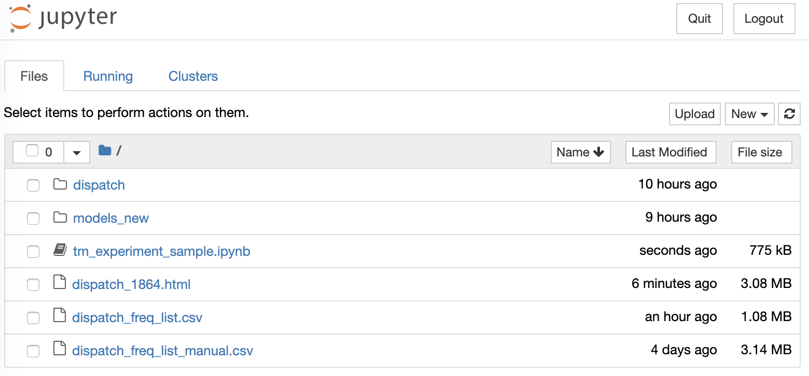

Goals:
- Introduction to topic modeling, or how to classify texts by shared content (“topics”).
Software
- python
- jupyter notebook
- other python libraries
nltkgensimspacypyLDAvismatplotlibnumpypandasplotlypprint
Workbooks (jupyter notebooks)
Installing: on Windows
On Mac and Linux things are easy, just follow the commands below; for Windows things are trickier and the easiest way would be to use Anaconda https://www.anaconda.com/distribution/#download-section.
Please, download and install. Most packages will come with Anaconda distribution; others you can install through its interface.
NB: After Anaconda is installed, it is still better to install libraries from the terminal opened directly from Anaconda and using the following command conda install -c conda-forge gensim (the latest version is not available via Anaconda interface).
More details: https://radimrehurek.com/gensim/install.html
Installing: on Mac and Linux
python libraries and additional data
pip install nameOfLibrary
Lemmatization library (although we are not going to be using it in the tutorial)
python -m spacy download en
jupyter notebook
From command line (in your working folder)
# installing
pip install jupyter
# starting
jupyter notebook
Your default browser should open something like this:

Click on an *.ipynb file to open a notebook.
Files & Scripts
- Dispatch CSV files
- Jupyter notebook
Class
- Basic explanations
- Hands-on tutorial
Topics
Example 1
Thursday, March 27, 1862
LIGHT ARTILLERY
—I am authorized by the Governor of Virginia to raise a Company of Light Artillery for the war. All those desirous of enlisting in this the most effective arm of the service, would do well to call at once at the office of Johnson & Guigon, Whig Building.
Uniforms and subsistence furnished.
A. B. GUIGON. mh 25—6t
Example 2
Wednesday, August 17, 1864
Royal Marriages.
—There is a story circulated in Germany, and some in Paris, that the match between the heir-apparent of the Imperial throne of Russia and the Princess Dagmar of Denmark having been definitively broken off, another is in the course of negotiation between His Imperial Highness and the Princess Helens of England.
Example 3
Monday, June 22, 1863
NEWS FROM EUROPE.
The steamship Scotia arrived at New York on Thursday from Europe, with foreign news to the 7th inst. The news is not important. The Confederate steamer Lord Clyde was searched by order of the British Government, but nothing contraband being found on board her she was permitted to sail. The Russians have been defeated near Grochoury by the Polish insurgents. The three Powers have sent an earnest note to Russia, asking for a representative Government, a general amnesty, and an immediate cessation of hostilities in Poland.
Reference Materials:
- On topic modeling: Blei, David M. 2013. “Topic Modeling and Digital Humanities.” Journal of Digital Humanities. April 8, 2013. http://journalofdigitalhumanities.org/2-1/topic-modeling-and-digital-humanities-by-david-m-blei/.
- More on topic modeling: Brett, Megan R. 2013. “Topic Modeling: A Basic Introduction.” Journal of Digital Humanities. April 8, 2013. http://journalofdigitalhumanities.org/2-1/topic-modeling-a-basic-introduction-by-megan-r-brett/.
- Examples of topic modeling employed by historians:
- Rob Nelson, Mining the Dispatch (http://dsl.richmond.edu/dispatch/)
- Cameron Blevins, “Topic Modeling Martha Ballard’s Diary” Historying, 2010. (http://www.cameronblevins.org/posts/topic-modeling-martha-ballards-diary/)
- David J Newman and Sharon Block, “Probabilistic topic decomposition of an eighteenth century American newspaper,” Journal of the American Society for Information Science and Technology vol. 57, no. 6 (April 1, 2006): 753-767.
- Alternative way to run topic modeling: Graham, Shawn, Scott Weingart, and Ian Milligan. 2012. “Getting Started with Topic Modeling and MALLET.” Programming Historian, September. https://programminghistorian.org/lessons/topic-modeling-and-mallet.
- On jupyter notebooks: https://www.dataquest.io/blog/jupyter-notebook-tips-tricks-shortcuts/.
Homework:
- Topic modeling the “Dispatch”: using the provided R-script, run topic modeling on the “Dispatch”.
- Change the number of topics to 30 and compare new results with the results for 40 topics. Record your observations.
- Publish your observations as a blogpost on your website; compare your results with those of Rob Nelson’s Mining the Dispatch (http://dsl.richmond.edu/dispatch/).